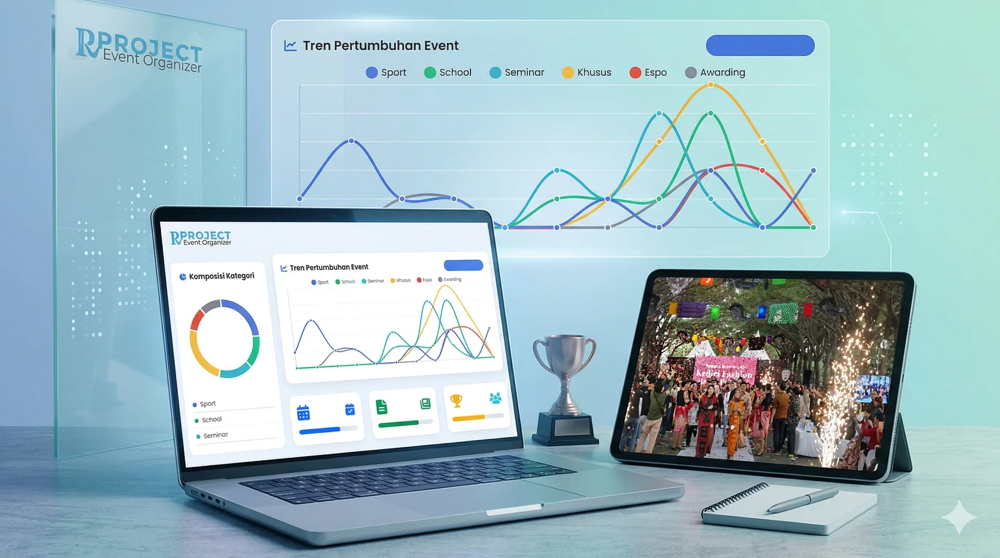

Fullstack Developer · Indonesia · Open to Projects
Crafting
Digital
Experiences
Halo, Kami Ngarumi membangun produk web yang elegan, cepat, dan memberi dampak nyata. Dari konsep hingga deployment.
5+
Proyek Selesai
1yr
Pengalaman
98
Skor Lighthouse
99%
Client Puas

Radar Kediri

PT Persada Nawa Kartika

Jawa Pos Radar Kediri

Otak - Otak Crispy Mbak Cu

Kelurahan Wonorejo Rungkut
Radar Kediri
PT Persada Nawa Kartika
Jawa Pos Radar Kediri
Otak - Otak Crispy Mbak Cu
Kelurahan Wonorejo Rungkut
Karya Pilihan
01 — Proyek Terbaru
Manajemen Inventaris, Kasir, dan Laporan Keuangan
Membangun platform ERP eksklusif dengan performa maksimal dan transisi halus.

R Project Dashboard
Sistem manajemen konten dan analisis data untuk mendukung ekosistem event organizer yang dinamis dan terukur.